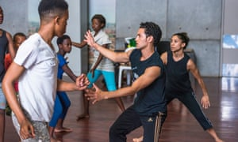
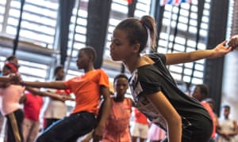
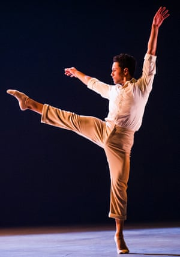

Taking the floor: Dane Hurst and the Rambert dance floor he moved to South Africa. Photograph: Karl Schoemaker for the Observer
Dane Hurst escaped township life to become a dancer with the Rambert in London. Now he’s bringing his dream back home. Frances Byrnes charts his next step
The school where Dane Hurst, star of Rambert dance company, learned to dance was eaten by termites and burned down by children. Thirteen years after he left South Africa, he has returned to the junction of Gelvandale and Helenvale in Port Elizabeth to show me where it was.
A childcare centre stands there now, locked behind breezeblocks and barbed wire. There’s a TB clinic, an armoured post office, a liquor store and scrubby grass. A man emerges from an outbuilding and Dane introduces himself, tells him he’s a dancer in the UK, but that he grew up here. The man, Justin, tells him about the gangs who roam these streets. He counts on his fingers: there are 18 gangs in the 1.5km from the old bus terminus to the house Dane grew up in. They’ve had 50 gun deaths in the past three months – the latest a two-year old girl caught in crossfire. To my surprise Dane says that his uncle was recently killed just here while washing his car. “Oh man,” smiles Justin. “It’s amazing – small world.” Neither man reveals any other feelings.
What does a child do in all this volatility? Well Dane, he danced
Dane is as alert as a cat to sudden noises though: metal being sheared in a makeshift workshop, a car roaring by, whistles from a corner manned by drug dealers. What does a child do in all this volatility? Well Dane, he danced. He tells Justin he wants to share this with other young people who want to escape the streets. “I’ve recently bought a dance floor over in London and right now as we speak it’s on a ship being sent back here.”
This floor is not just any floor: this is the former rehearsal floor of Rambert, sold when the dance company moved from Chiswick to its new home on London’s South Bank. All the roles that Dane has danced for Rambert, he learned on this floor. Mark Baldwin, Rambert’s artistic director, compares it to his desk blotter: “You can probably see all the tracings of the work that we’ve done for the last 15 years,” he says. To Dane, it’s a foundation. The reinforced vinyl will soften young South Africans’ landings; it’s a shock absorber, protecting joints, and it withstands friction and heat.
Coming home: Hurst back in South Africa, where he first discovered his love of dance. Photograph: Karl Schoemaker for the Observer
Dane won best male dancer at the Critics’ Circle Awards in 2014, just after he bought the floor. At the ceremony he announced his dream to use dance to empower the young in his home city, and he asked for help. Now his plans have grown. He approached the architect Adam Kalkin to design a dance centre made out of shipping containers, for when there are funds to build it. The centre will house the floor. Port Elizabeth, as its name suggests, suits shipping containers. Dane looked out to sea as a child in Gelvandale. “All the houses are right on top of each other,” he says. “There’s a lot of chaos in the street, but whenever you look out you see the ocean and somehow in your heart it makes you feel OK.”
He chanced on ballet because his grandmother made costumes at the local dance school, the Toynbee Club. It was the time of apartheid. Gwen-Mary Wells, the ballet teacher, was white. She ignored segregation to teach in Gelvandale, which was designated a “coloured” area. The Toynbee building swayed in the wind. People pelted it with stones. When pupils opened windows, the stone pelters stared at them through security wire. Yet for young Dane it was shelter. Sitting under Grandma Patty’s sewing table, he watched another local boy – Warren – leaping out of sight. Once, Warren crashed through the termite-eaten floorboards and Dane wanted to be that powerful.
Growing up, Dane was torn between several houses and parents who were both, at times, unemployed. House by house, Dane learned to contain himself. His mother, Maureen, lived north of the city in Booysen Park with Dane’s three sisters, in a house only partly built when her marriage ended. Dane lived with his father’s family in Gelvandale. His father fought his own demons. There was little food in anyone’s cupboard, so dance was a release.
Then Maureen took Dane to live with her and his sisters: a single mother with four children. They struggled for money. Dane felt guilty about his taxi fares back to Gelvandale for ballet class so he stopped, quickly losing the rigour and the freedom of living in the moment.

‘Dance is a sort of language that we use to make new friends’: children in the township of Zwide, learning some dance moves with Hurst. Photograph: Karl Schoemaker for the Observer
Instead, he tried to connect with the local kids, but he became caught up in a crowd who burned tyres and was hauled in by police and put into a Casspir truck – one of the infamous symbols of apartheid oppression. He knew that he needed to do what Warren had done – to take flight. He went back to live at his father’s so he could dance. One day he caught his mother watching him through a hole in the Toynbee Club wall, desperate for a sight of him. He ran after her. She fled. Dane focused. He won competitions. Gwen-Mary Wells guarded his winnings for him. His ambition was to escape abroad.
SPRING 2015. Dane is in Kensington, west London, explaining to Lady Sainsbury his plan to take the floor back home , and to ask her for help. “Can you show me the right direction?” he asks. She has a photograph, dated April 1993, to show Dane. In it, she is dancing with Nelson Mandela at a private party in Johannesburg. She asks Dane what Mandela is doing with his fists.
In the dance studio what colour you are means nothing. When music plays there are no barriers
Dane explains that Mandela is doing a joyous Toyi-Toyi, a dance of African freedom. Decades earlier, Sainsbury had been a ballerina with Sadler’s Wells ballet. Moments before the photograph was taken, she’d had a discussion with Mandela where they agreed that, now that apartheid was ending, they could renew the flow of South African dancers to the UK. She would raise funds for exceptional students to train at the Rambert School. Warren Adams, the dancer who inspired Dane, won an early scholarship. Dane got one of the last. Adams is a Broadway choreographer now. When Dane tells Warren about his plans for the dance floor, Warren says: “That’s modest!”
Dane tells Warren about a studio made out of shipping containers and Warren slows. “Wow, that’s… ambitious,” he says.
“I know it’s crazy,” says Dane.
Warren: “Crazy wins every time.”
Rambert has been Dane’s family while he’s been in Britain. At just 32, he is risking a lot to leave. He last danced with Rambert in Edinburgh last November. Until he’d had this idea, being a dancer was his one wild dream: “Most people say you must be crazy to leave a job. I feel like my heart is overpowering my mind. I’ve grown up in the company, but like all relationships you have to step away from the household. Now’s the time.”

Far reaching: the workshops aim to give the children a way to survive that isn’t violent. Photograph: Karl Schoemaker for the Observer
By the time we are standing on the corner where he learned to dance, it’s April and the dance floor is on a ship called Presence, heading south. Dane has established an organisation called the Moving Assembly Project and launched a pilot project in Port Elizabeth: two weeks of workshops at the Ubuntu Health and Education Centre in the township of Zwide. Ubuntu was established to help children affected by HIV, but it is open to all.
Outside is red-stone ground, scorched metal, corrugated roofs, litter. Shipping containers serve vetkoek burgers or advertise diamond and gold exchange. Inside, the children are encouraged to make a noise and support each other.
Dane has invited Estela Merlos, another ex-Rambert dancer, to Africa to help him teach. The atmosphere is lively.
Fifty children are learning a dance. One of them, Ayabonga Mayinje, fights the smile that comes over him with the music. Sesethu Budaza doesn’t fight his; he’s grinning. Lebogang Gobodo gracefully pushes air away. “Dance is some sort of language that we use to make new friends,” says Amanda Coko, putting her actions into words.

Taking the stage: Hurst in Rambert’s Transfigured Night by Kim Brandstrup last November. Photograph: Tristram Kenton for the Guardian
Most of the children speak Xhosa, some Sotho. Being mixed race, Dane resents that he was only allowed to learn “the colonial languages of Afrikaans and English”, but says “dance makes me feel part of the world. In a dance studio your language means nothing, what colour you are means nothing. When music plays there are no barriers.”
“Dancing is talking a lot of things,” adds Gobisa Siwisa, another of the children. “One day I was washing dishes in the kitchen. Then I was making some moves and mother says, ‘What you dancing, I don’t believe it!’” A week ago, the students were themselves suspicious about the workshops. But who doesn’t want to dance?
In their lunch hour they cavort to Beyoncé and Jay Z. Now they’re feeling something more concentrated take shape. They dance duets, take each other’s weight, gently, without embarrassment. A feisty girl who lip-reads dances sideways on, following the others. Dane stands like a prince.
The success of the Ubuntu workshops augurs well for further workshops in the rural township of Grahamstown and in Durban, and for the entire future of Dane’s dream. These children have really been lifted up. Gobisa believes: “If you are angry or sad or you’re feeling emotional, when you dance those things go.” This is Dane’s aim: to give them a way to survive that isn’t violent, because that’s what saved him.
By the time you read this, Dane’s dance floor will have arrived in Port Elizabeth.
The Sprung Floor, Dane Hurst’s story, is being broadcast on 9 May on BBC Radio 4 and on 18 May on the World Service
SOURCE: THE GUARDIAN